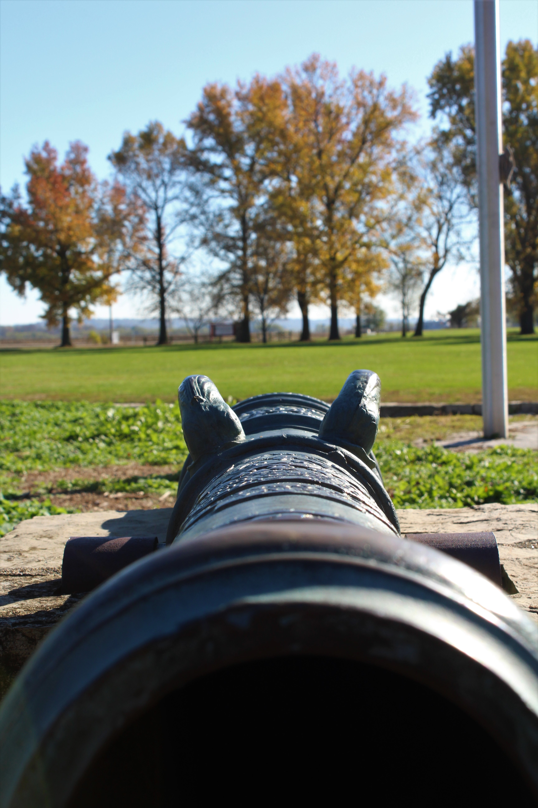
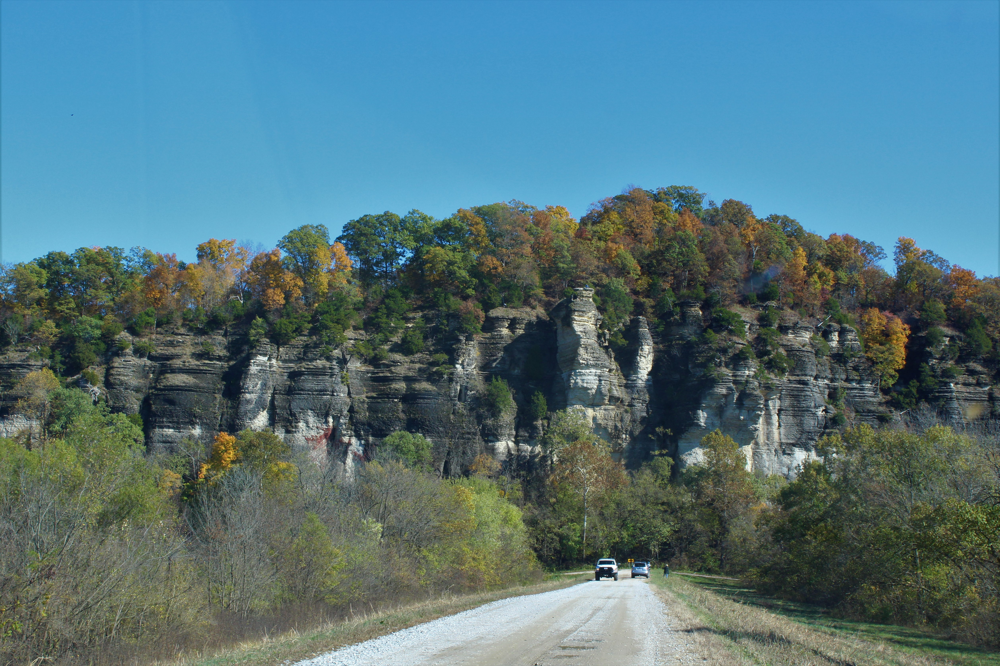
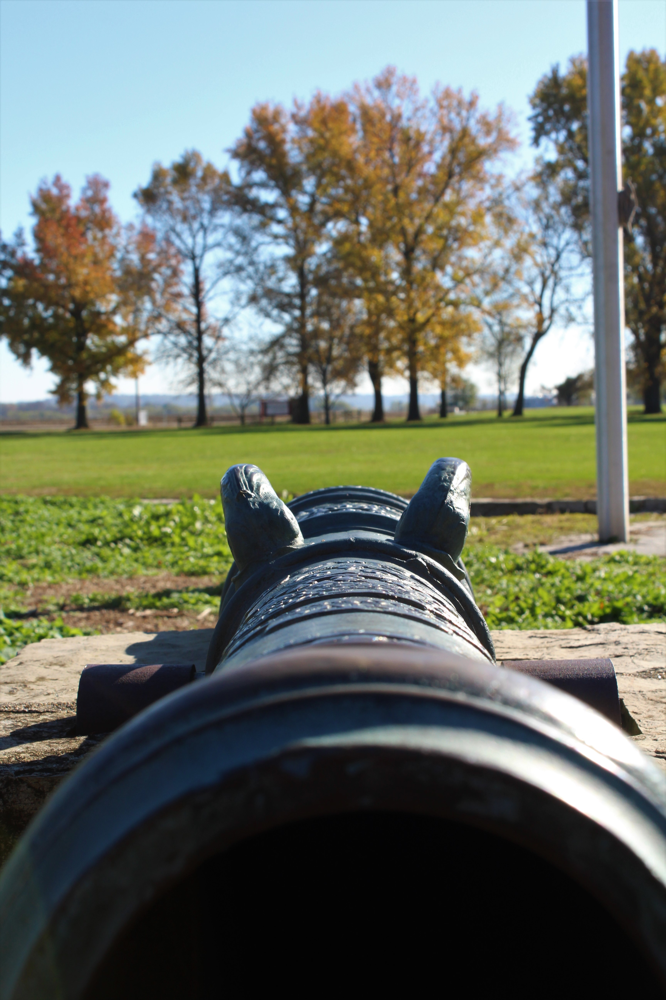
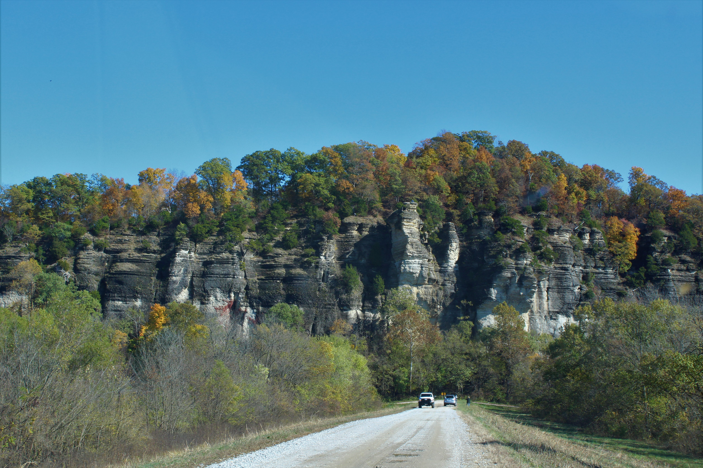

Welcome to Casual Photographer where we love to explore our local area & work on our photography skills. The St. Louis area has so many wonderful and photographic places for the casual photographer. Plenty of unique opportunities to hone photography skills are an easy day trip away. Here are some local examples.


 





St. Charles
Historic Downtown St. Charles is a great place to practice diffrent styles of photgraphy. The variety that this street offers is tremendous. From bustleing festivals to the unique architecture of Missouri's first capital there is always something new to explore.
Bald Knob Cross
Located in Alto Pass IL, Bald Knob Cross is a landmark you can see for miles. On a clear day you can see this cross from the Missouri side of the river.
Pere Marquette
Pere Marquette is a hidden gem nestled in a bend in the Illinois River. Located a few miles north of Grafton, this large part offers ample photography opportunites. Visit in the fall for some truly spectacular colors.
Cahokia Mounds
Cahokia Mounds an IL state historic site is located in the Metro East. This site is the largest pre-Columbian settlement north of Mexico. It is also a beautiful place to capture a full moon on the rise.
Fort de Charters
Fort de Charters was a French Fort first built in 1720. This historic site is located in southwestern IL just outside of Pairie du Rocher.
LaRue Pine Hill
One of the most unique places in the world, LaRue Pine Hills features imposing limestone bluffs. A great place to take beautiful photographs and reconnect with nature.
Augusta
Augusta is a great place to practice photography. Whether visiting the wineries, enjoying the picturesque town, or the atomospheric cemetary the opportunites abound.
Great River Road
Winding along the limestone bluffs of the Mississippi River, the Great River Road offer stunning views in all four seasons. Visit during the winter for snowcovered landscapes and a chance to see a Bald Eagle.